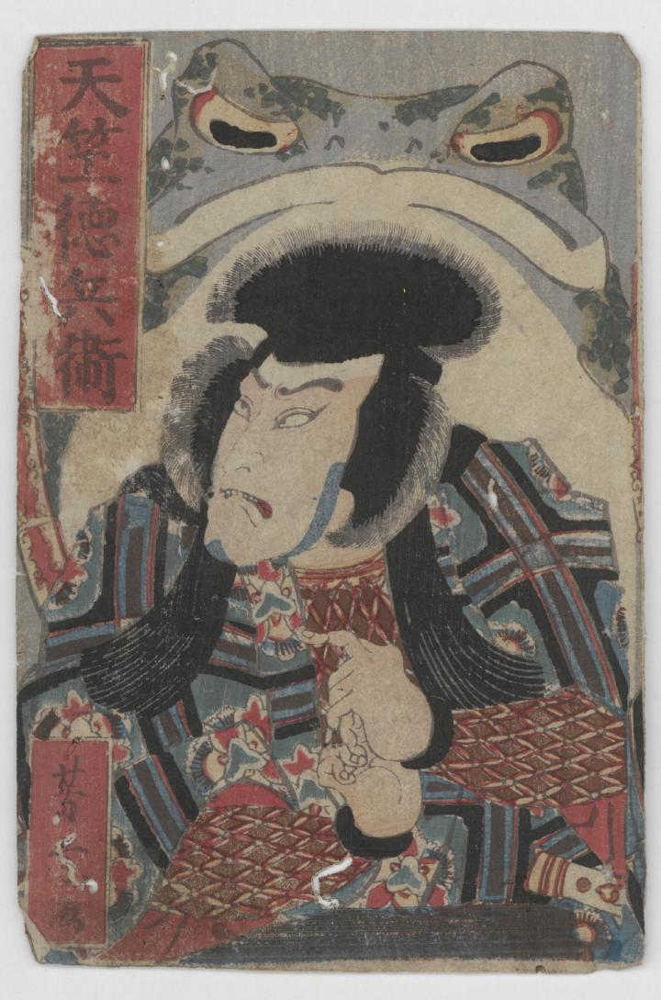

天竺徳兵衛の背後に大きな蝦蟇がいる。
著作者：出子散人・歌川國久／出典：親書誌：U426_nichibunken_0385：天竺徳兵衛蟇夜話；テンジク トクベエ ガマ ノ ヨバナシ／日付：2014／資源識別子：U426_nichibunken_0385_0001_0000
Copyright (c)2010- International Research Center for Japanese Studies, Kyoto, Japan. All rights reserved.